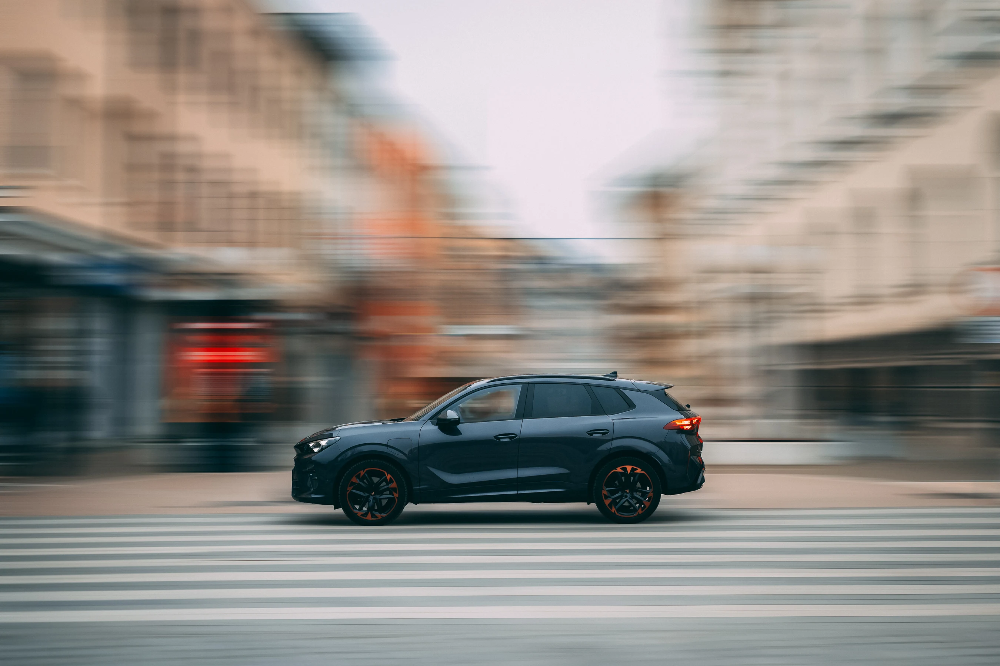

01Brief
Cupra je htjela najaviti dolazak u Mostar i Banjaluku.
dva nova salona. zadatak je bio jednostavan na papiru: najaviti otvaranje.
02ne na običan način
onda ide VELIKO ali:
Cupra nije brend koji to radi na običan način.
mlad, futuristički, s jasnim vizualnim identitetom: tražili su pristup koji je social-first i koji odgovara karakteru brenda.

03rijeke.
krenuli smo od pitanja: šta Mostar i Banjaluka uopće imaju zajedničko?
Venn dijagram dva grada pokazao je jedan jasan odgovor: rijeke. Neretva i Vrbas.
dubljom analizom CUPRA brenda primijetili smo konzistentno povezivanje s prirodnim elementima kroz vizualni identitet, materijale i storytelling.
voda se posebno izdvojila kao jedan od motiva koji se ponavlja kroz više touchpointa brenda, čime je početna hipoteza potvrđena.
04dva seta osobina.
ali tu smo otišli korak dalje. umjesto da rijeke budu samo dekor, postale su karakterizacija.
Vrbas je duga, mirna rijeka. Neretva je brza, oštra, silovita.
i tačno takva je Cupra: auto koji te može odvesti i na jedno i na drugo iskustvo, ovisno o tome šta tražiš od vožnje.
voda nije bila pozadina. bila je metafora za performans.

05dva videa. dva karaktera. jedan brend.
svaki grad dobio je svoj film: s vlastitim tonom, ritmom i energijom.
Banjaluka: dugi kadrovi, mirnoća, iskustvo vožnje.
Mostar: brzi prelazi, oštrina, električna energija.
bez obzira na format kampanje, određeni elementi ostajali su dosljedni: osjećaj pokreta, filmski pacing i naracija koja više gradi atmosferu nego što prodaje proizvod.
kad ih gledaš zajedno, tek tada vidiš cijelu Cupru.
06izvođenje
kampanja je pokrenuta teaserima, po jedan za svaki grad, koji su najavili dolazak a da ne otkrivaju previše.
produkcija je isporučila dva glavna videa, dva trailera i ne znamo ni sami koliko fotografija.
četiri reela, dva grada
07gdje da tražiš vezu?
kad brend ima karakter, svaka aktivacija može postati priča, ako znaš gdje da tražiš vezu.
u ovom slučaju to su bile dvije rijeke. dva grada. i jedan brend koji ih je spojio.